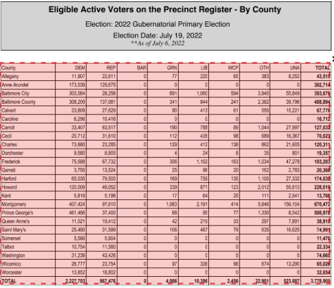
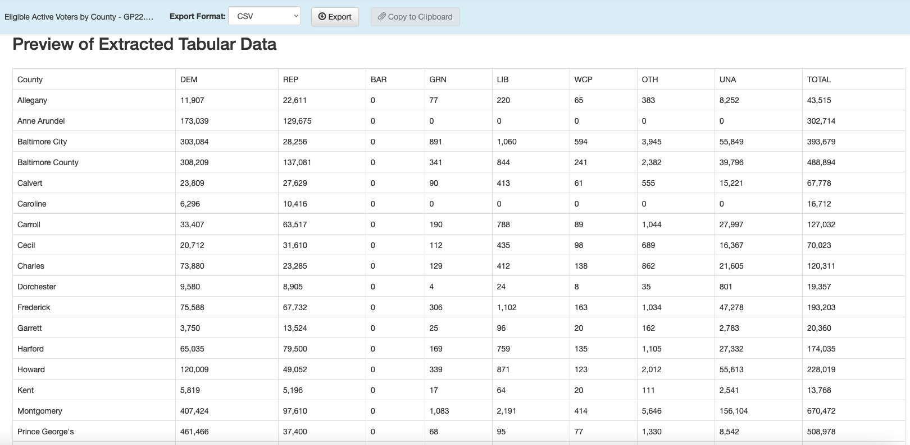
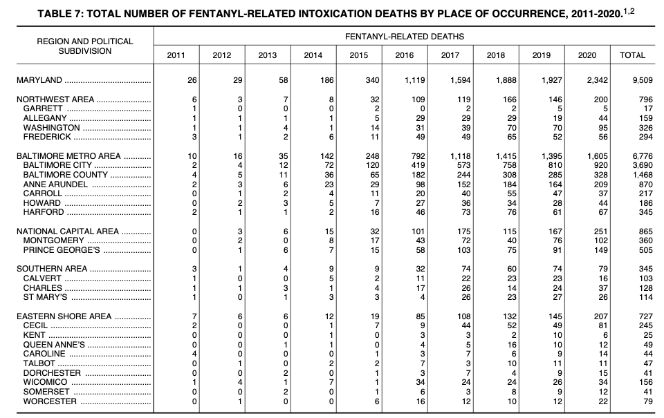
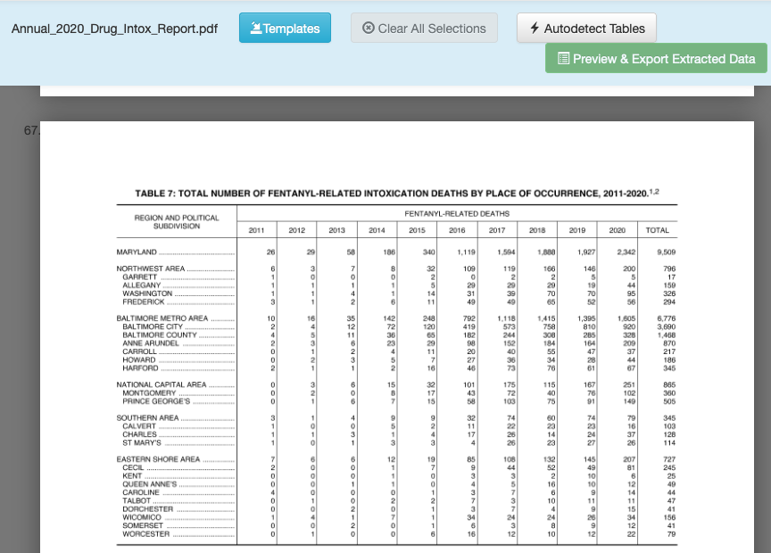
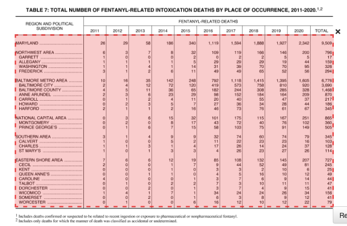
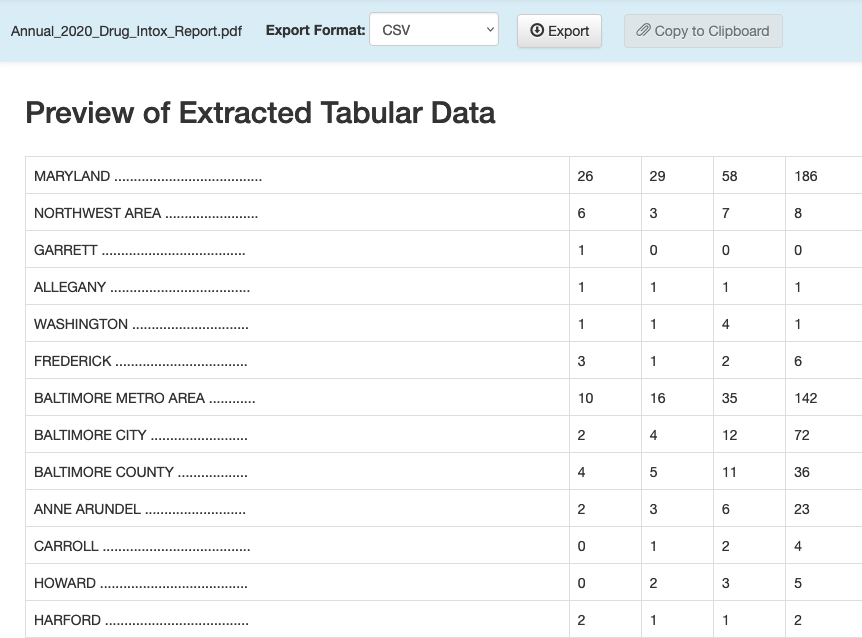

library(tidyverse)
library(janitor)22 Cleaning Data Part IV: PDFs
The next circle of Hell on the Dante’s Inferno of Data Journalism is the PDF. Governments everywhere love the PDF and publish all kinds of records in a PDF. The problem is a PDF isn’t a data format – it’s a middle finger, saying I’ve Got Your Accountability Right Here, Pal.
It’s so ridiculous that there’s a constellation of tools that do nothing more than try to harvest tables out of PDFs. There are online services like CometDocs where you can upload your PDF and point and click your way into an Excel file. There are mobile device apps that take a picture of a table and convert it into a spreadsheet. But one of the best is a tool called Tabula. It was build by journalists for journalists.
There is a version of Tabula that will run inside of R – a library called Tabulizer – but the truth is I’m having the hardest time installing it on my machine, which leads me to believe that trying to install it across a classroom of various machines would be disastrous. The standalone version works just fine, and it provides a useful way for you to see what’s actually going on.
Unfortunately, harvesting tables from PDFs with Tabula is an exercise in getting your hopes up, only to have them dashed. We’ll start with an example. First, let’s load the tidyverse and janitor.
22.1 Easy does it
Tabula works best when tables in PDFs are clearly defined and have nicely-formatted information. Here’s a perfect example: active voters by county in Maryland.
Download and install Tabula. Tabula works much the same way as Open Refine does – it works in the browser by spinning up a small webserver in your computer.
When Tabula opens, you click browse to find the PDF on your computer somewhere, and then click import. After it imports, click autodetect tables. You’ll see red boxes appear around what Tabula believes are the tables. You’ll see it does a pretty good job at this.

Now you can hit the green “Preview & Export Extracted Data” button on the top right. You should see something very like this:

You can now export that extracted table to a CSV file using the “Export” button. And then we can read it into R:
voters_by_county <- read_csv("data/tabula-Eligible Active Voters by County - GG22.csv")Rows: 25 Columns: 10
── Column specification ────────────────────────────────────────────────────────
Delimiter: ","
chr (1): County
dbl (1): BAR
num (8): DEM, REP, GRN, LIB, WCP, OTH, UNA, TOTAL
ℹ Use `spec()` to retrieve the full column specification for this data.
ℹ Specify the column types or set `show_col_types = FALSE` to quiet this message.voters_by_county# A tibble: 25 × 10
County DEM REP BAR GRN LIB WCP OTH UNA TOTAL
<chr> <dbl> <dbl> <dbl> <dbl> <dbl> <dbl> <dbl> <dbl> <dbl>
1 Allegany 11793 22732 0 76 223 73 382 8337 43616
2 Anne Arundel 173922 129893 0 632 2257 434 2951 96403 406492
3 Baltimore City 303620 28211 0 908 1080 666 3984 56665 395134
4 Baltimore County 309297 137378 0 898 2493 687 5921 106789 563463
5 Calvert 23779 27912 0 94 410 69 548 15169 67981
6 Caroline 6250 10539 0 34 108 40 160 4454 21585
7 Carroll 33572 63771 0 191 797 102 1033 28139 127605
8 Cecil 20666 31961 0 111 447 104 678 16360 70327
9 Charles 74373 23334 0 129 425 143 864 21819 121087
10 Dorchester 9608 8965 0 22 110 33 191 3745 22674
# ℹ 15 more rowsBoom - we’re good to go.
22.2 When it looks good, but needs a little fixing
Here’s a slightly more involved PDF, from Maryland’s 2020 annual report on unintentional drug and alcohol-related intoxication deaths. Specifically, we’re looking at Table 7 on page 67 of the report which lists the number of fentanyl-related deaths by jurisdiction:

Looks like a spreadsheet, right? Save that PDF file to your computer in a place where you’ll remember it (like a Downloads folder).
Now let’s repeat the steps we did to import the PDF into Tabula, go to page 67. It should look like this:

Let’s draw a box around what we want, but there’s a catch: the headers aren’t on a single line. If you draw your box around the whole table and preview, you’ll see that there’s a problem. To fix that, we’ll need to limit our box to just the data. Using your cursor, click and drag a box across the table so it looks like this:

Now you can hit the green “Preview & Export Extracted Data” button on the top right. Using the “Stream” method, you should see something very like this:

You can now export that extracted table to a CSV file using the “Export” button. And then we can read it into R and clean up the column names and some other things:
fentanyl_deaths <- read_csv("data/tabula-Annual_2020_Drug_Intox_Report.csv") |> clean_names()Rows: 29 Columns: 12
── Column specification ────────────────────────────────────────────────────────
Delimiter: ","
chr (1): MARYLAND ......................................
dbl (6): 26, 29, 58, 186, 340, 1,119
num (5): 1,594, 1,888, 1,927, 2,342, 9,509
ℹ Use `spec()` to retrieve the full column specification for this data.
ℹ Specify the column types or set `show_col_types = FALSE` to quiet this message.fentanyl_deaths# A tibble: 29 × 12
maryland x26 x29 x58 x186 x340 x1_119 x1_594 x1_888 x1_927 x2_342
<chr> <dbl> <dbl> <dbl> <dbl> <dbl> <dbl> <dbl> <dbl> <dbl> <dbl>
1 NORTHWEST A… 6 3 7 8 32 109 119 166 146 200
2 GARRETT ...… 1 0 0 0 2 0 2 2 5 5
3 ALLEGANY ..… 1 1 1 1 5 29 29 29 19 44
4 WASHINGTON … 1 1 4 1 14 31 39 70 70 95
5 FREDERICK .… 3 1 2 6 11 49 49 65 52 56
6 BALTIMORE M… 10 16 35 142 248 792 1118 1415 1395 1605
7 BALTIMORE C… 2 4 12 72 120 419 573 758 810 920
8 BALTIMORE C… 4 5 11 36 65 182 244 308 285 328
9 ANNE ARUNDE… 2 3 6 23 29 98 152 184 164 209
10 CARROLL ...… 0 1 2 4 11 20 40 55 47 37
# ℹ 19 more rows
# ℹ 1 more variable: x9_509 <dbl>22.3 Cleaning up the data in R
The good news is that we have data we don’t have to retype. The bad news is, we have a few things to fix, starting with the fact that the headers shouldn’t be headers. Let’s start by re-importing it and specifying that the first row doesn’t have column headers:
fentanyl_deaths <- read_csv("data/tabula-Annual_2020_Drug_Intox_Report.csv", col_names = FALSE) |> clean_names()Rows: 30 Columns: 12
── Column specification ────────────────────────────────────────────────────────
Delimiter: ","
chr (1): X1
dbl (5): X2, X3, X4, X5, X6
num (6): X7, X8, X9, X10, X11, X12
ℹ Use `spec()` to retrieve the full column specification for this data.
ℹ Specify the column types or set `show_col_types = FALSE` to quiet this message.fentanyl_deaths# A tibble: 30 × 12
x1 x2 x3 x4 x5 x6 x7 x8 x9 x10 x11 x12
<chr> <dbl> <dbl> <dbl> <dbl> <dbl> <dbl> <dbl> <dbl> <dbl> <dbl> <dbl>
1 MARYLAND .… 26 29 58 186 340 1119 1594 1888 1927 2342 9509
2 NORTHWEST … 6 3 7 8 32 109 119 166 146 200 796
3 GARRETT ..… 1 0 0 0 2 0 2 2 5 5 17
4 ALLEGANY .… 1 1 1 1 5 29 29 29 19 44 159
5 WASHINGTON… 1 1 4 1 14 31 39 70 70 95 326
6 FREDERICK … 3 1 2 6 11 49 49 65 52 56 294
7 BALTIMORE … 10 16 35 142 248 792 1118 1415 1395 1605 6776
8 BALTIMORE … 2 4 12 72 120 419 573 758 810 920 3690
9 BALTIMORE … 4 5 11 36 65 182 244 308 285 328 1468
10 ANNE ARUND… 2 3 6 23 29 98 152 184 164 209 870
# ℹ 20 more rowsOk, now we have all the data. But we need actual headers. Let’s add those using rename(), keeping in mind that the new name comes first.
fentanyl_deaths <- read_csv("data/tabula-Annual_2020_Drug_Intox_Report.csv", col_names = FALSE) |>
clean_names() |>
rename(jurisdiction = x1, deaths_2011 = x2, deaths_2012 = x3, deaths_2013 = x4, deaths_2014 = x5, deaths_2015 = x6, deaths_2016 = x7, deaths_2017 = x8,
deaths_2018 = x9, deaths_2019 = x10, deaths_2020 = x11, deaths_total = x12)Rows: 30 Columns: 12
── Column specification ────────────────────────────────────────────────────────
Delimiter: ","
chr (1): X1
dbl (5): X2, X3, X4, X5, X6
num (6): X7, X8, X9, X10, X11, X12
ℹ Use `spec()` to retrieve the full column specification for this data.
ℹ Specify the column types or set `show_col_types = FALSE` to quiet this message.fentanyl_deaths# A tibble: 30 × 12
jurisdiction deaths_2011 deaths_2012 deaths_2013 deaths_2014 deaths_2015
<chr> <dbl> <dbl> <dbl> <dbl> <dbl>
1 MARYLAND .......… 26 29 58 186 340
2 NORTHWEST AREA .… 6 3 7 8 32
3 GARRETT ........… 1 0 0 0 2
4 ALLEGANY .......… 1 1 1 1 5
5 WASHINGTON .....… 1 1 4 1 14
6 FREDERICK ......… 3 1 2 6 11
7 BALTIMORE METRO … 10 16 35 142 248
8 BALTIMORE CITY .… 2 4 12 72 120
9 BALTIMORE COUNTY… 4 5 11 36 65
10 ANNE ARUNDEL ...… 2 3 6 23 29
# ℹ 20 more rows
# ℹ 6 more variables: deaths_2016 <dbl>, deaths_2017 <dbl>, deaths_2018 <dbl>,
# deaths_2019 <dbl>, deaths_2020 <dbl>, deaths_total <dbl>We could stop here, but there are a bunch of periods in the jurisdiction column and it’s better to remove them - it will make filtering easier. Let’s use str_replace_all() to do that:
fentanyl_deaths <- read_csv("data/tabula-Annual_2020_Drug_Intox_Report.csv", col_names = FALSE) |>
clean_names() |>
rename(jurisdiction = x1, deaths_2011 = x2, deaths_2012 = x3, deaths_2013 = x4, deaths_2014 = x5, deaths_2015 = x6, deaths_2016 = x7, deaths_2017 = x8,
deaths_2018 = x9, deaths_2019 = x10, deaths_2020 = x11, deaths_total = x12) |>
mutate(jurisdiction = str_squish(str_replace_all(jurisdiction,'\\.','')))Rows: 30 Columns: 12
── Column specification ────────────────────────────────────────────────────────
Delimiter: ","
chr (1): X1
dbl (5): X2, X3, X4, X5, X6
num (6): X7, X8, X9, X10, X11, X12
ℹ Use `spec()` to retrieve the full column specification for this data.
ℹ Specify the column types or set `show_col_types = FALSE` to quiet this message.fentanyl_deaths# A tibble: 30 × 12
jurisdiction deaths_2011 deaths_2012 deaths_2013 deaths_2014 deaths_2015
<chr> <dbl> <dbl> <dbl> <dbl> <dbl>
1 MARYLAND 26 29 58 186 340
2 NORTHWEST AREA 6 3 7 8 32
3 GARRETT 1 0 0 0 2
4 ALLEGANY 1 1 1 1 5
5 WASHINGTON 1 1 4 1 14
6 FREDERICK 3 1 2 6 11
7 BALTIMORE METRO … 10 16 35 142 248
8 BALTIMORE CITY 2 4 12 72 120
9 BALTIMORE COUNTY 4 5 11 36 65
10 ANNE ARUNDEL 2 3 6 23 29
# ℹ 20 more rows
# ℹ 6 more variables: deaths_2016 <dbl>, deaths_2017 <dbl>, deaths_2018 <dbl>,
# deaths_2019 <dbl>, deaths_2020 <dbl>, deaths_total <dbl>There are a few important things to explain here:
- Because we’re replacing a literal period (.), we need to make sure that R knows that. Hence the ‘\.’ Why? Because ‘.’ is a valid expression meaning “any character”, so if we didn’t have the backslashes the above code would make the entire column blank (try it!)
- The
str_squishfunction cleans up any excess spaces, at the beginning, middle or end of a character column. If we then use filter, we can do so with confidence. - I put “deaths_” in front of each yearly column because R likes it when columns don’t begin with a number. You can have a column called
2011, but you literally have to use the backticks (2011) to refer to it in code.
All things considered, that was pretty easy. Many - most? - electronic PDFs aren’t so easy to parse. Sometimes you’ll need to open the exported CSV file and clean things up before importing into R. Other times you’ll be able to do that cleaning in R itself.
Here’s the sad truth: THIS IS PRETTY GOOD. It sure beats typing it out. And since many government processes don’t change all that much, you can save the code to process subsequent versions of PDFs.